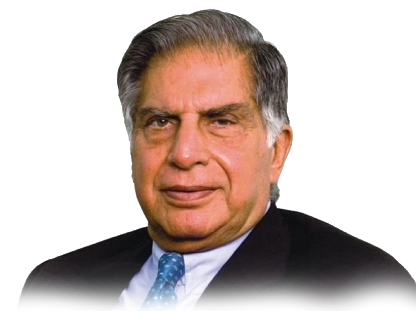

Ratan Tata

Biography
Ratan Tata is an Indian industrialist and a former chairman of Tata Sons.
From 1990 – 2012 he was the Chairman of Tata Group and became the interim
chairman from October 2016 through February 2017. He is a dedicated
philanthropist and heads the company’s charitable trust, and more than
half of the profits are channelled towards various charitable initiatives.
He was awarded the second and the third highest civilian award in
India – the Padma Bhushan – in 2000 and the Padma Vibhushan – in 2008.
Important Details
- Name – Ratan Naval Tata
- Date of Birth – 28 December 1937
- Born in – Bombay, Bombay Presidency, British India (present-day Mumbai, Maharashtra, India)
- Alma mater – Cornell University (Barch)
- Occupation – Industrialist, philanthropist, and investor
- Title – Chairman Emeritus, Tata Sons and Tata Group
- Term – (1991–2012) and (2016–2017)
- Predecessor – JRD Tata
- Successor – Cyrus Mistry (2012 -2016); Natarajan Chandrasekaran (2017–present)
- Parent(s) – Naval Tata
- Relatives – Tata family
- Awards – Assam Baibhav (2021), Padma Vibhushan (2008), Maharashtra Bhushan (2006), and Padma Bhushan (2000)